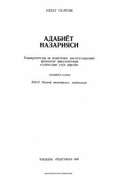

ANFilologiya fakulteti talabalari uchun mo'ljallangan adabiyot nazariyasi bo'yicha fundamental darslik.
Ushbu darslik oliy o'quv yurtlari va pedagogika institutlarining filologiya fakulteti talabalari uchun mo'ljallangan. Kitobda adabiyot nazariyasining asosiy tushunchalari, rivojlanish yo'llari va adabiyotshunoslik fanining nazariy masalalari yoritilgan.